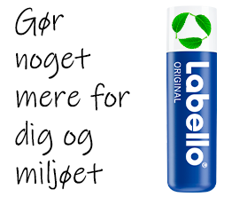

Gør noget godt for dig
Derfor skal du købe Labello
Vores produkter er sammensat af 100% naturlige ingredienser fra det sydelige Frankrig. Vores læbepomader give læberne en farveløs finish og bløde, skønne og naturlige læber hver eneste dag.
Køb vores produkter
Du kan købe vores produkter i alle supermarkeder nær dig eller online på matas.dk. Det er let at vælge de produkter, som er gode for dig og for din omverden. Vores serie rummer eksempelvis et stort udvalg af naturlige læbepomader, som indeholder forskellige vitaminer. Derudover finder du ingen parfume i vores produkter. På Labello emballagerne får du klar information om mærkningernes betydning. Så kan du nemt vælge din Labello med både hjerte og fornuft.
Terracycle, reduce, reuse
I samarbejde med TerrraCycle vil vi reducere alt spild fra vores Labello produkter, så vi kan reducere og eliminere alt plastik én dag af gangen. Vi kan ikke gøre det uden dig. Derfor skal du sende dine tomme labello hysltere til os. Du kan derved opnå rabat på dit næste køb af et Labello produkt.

TerraCycle genbruger, genanvender og upcycler affald i stedet for at brænde eller deponere det, hvilket er en markant bedre løsning for affald end traditionelle metoder. De giver affaldet et nyt liv ved at skabe brugbare nye produkter ud af ting der ellers ville være smidt ud.
Til dato har over 80 millioner mennesker i 21 lande hjulpet med at indsamle og genbruge nok affald til at optjene over 21 mio. dollars til velgørenhed i hele verden.
Læs mere på vores Facebook side